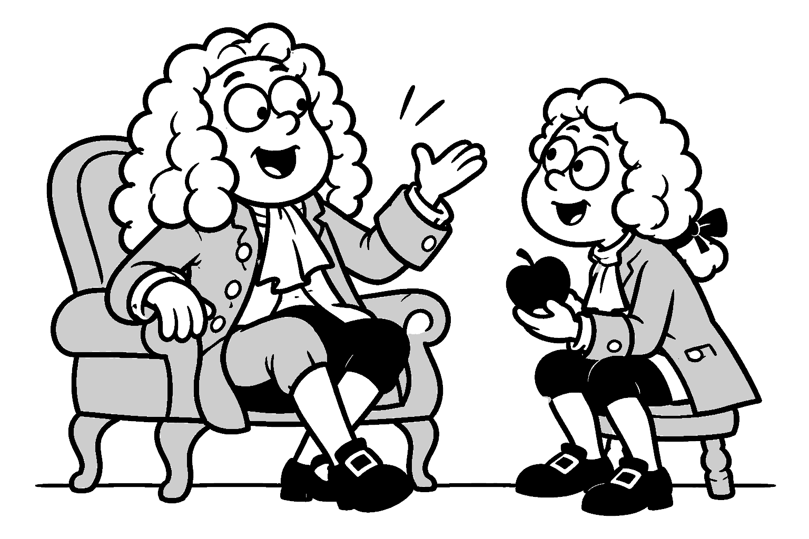
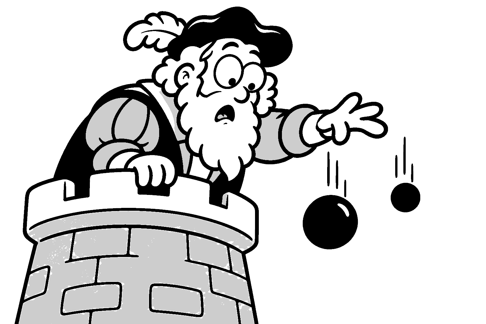
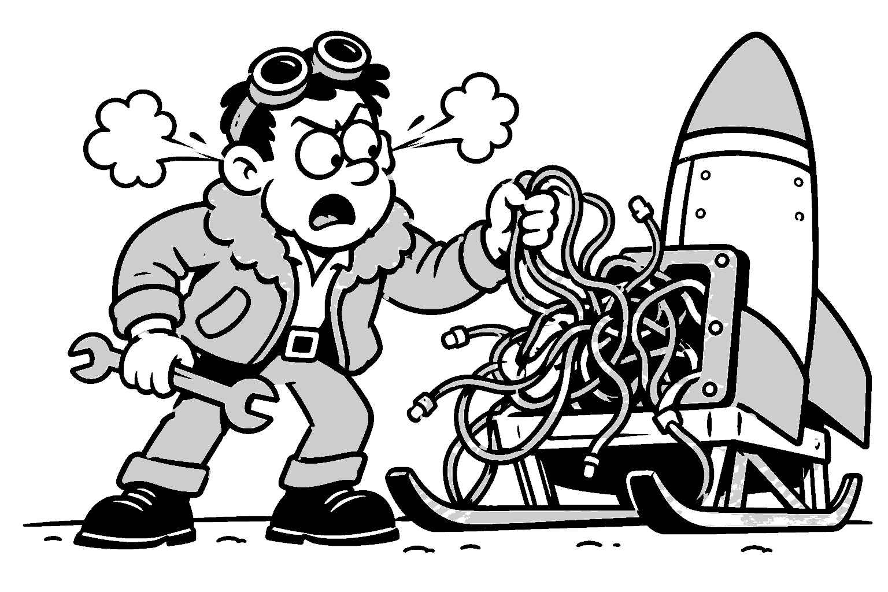

True or Folklore? · Round 1 of 10
Round 1: Famous scenes
The stories everyone has heard. A warm-up. Make your call on each story, then tap to see the verdict.
Playing at a table?
Read each question aloud. Everyone writes TRUE, FOLKLORE or DISPUTED before anyone taps. One point for each right call; DISPUTED only scores if the call was DISPUTED. The book has a two-team scoresheet for this.
Questions first, then an answer key on its own page.
 FOLKLORE
FOLKLORERound 1 · No. 1
Did Archimedes shout "Eureka!" in the bath?
Folklore. Archimedes stated the law of buoyancy around 250 BC, in his treatise On Floating Bodies. The bath, the crown and the cry of "Eureka!" are almost certainly a later embellishment.
 FOLKLORE
FOLKLORERound 1 · No. 2
Did an apple fall on Newton's head?
Folklore. There is an apple in Newton's own account of his thinking about gravity. It does not hit him on the head. That detail is a later embellishment.

TRUERound 1 · No. 3
Did Newton himself tell the apple story?
True. The apple story is not a fable invented by Newton's admirers. According to Encyclopaedia Britannica, it traces back to Newton's own later recollection. Only the apple hitting his head was added afterward.

FOLKLORERound 1 · No. 4
Did Galileo drop balls from the Leaning Tower of Pisa?
Folklore. The tower drop is likely a legend. It is not in Galileo's own writings. His documented work on falling bodies used balls rolling down ramps, with notes from around 1603 to 1604 and results published in 1638.
 FOLKLORE
FOLKLORERound 1 · No. 5
Did Pythagoras discover the Pythagorean theorem?
Folklore. The relation that carries Pythagoras's name was known and used long before him. A Babylonian tablet from around 1800 BC lists its number triples, and Pythagoras lived from about 570 to 495 BC.
 FOLKLORE
FOLKLORERound 1 · No. 6
Did Einstein write E = mc² in his 1905 paper?
Folklore. Einstein's 1905 paper contains the idea but not the famous formula. It states in a single sentence that a body which gives off energy as radiation loses mass in proportion.
 TRUE
TRUERound 1 · No. 7
Did Einstein win his Nobel Prize for something other than relativity?
True. Einstein's Nobel Prize, the physics prize designated for 1921, was for his work on the photoelectric effect. NobelPrize.org gives the citation as "for his services to Theoretical Physics, and especially for his discovery of the law of the photoelectric effect." Relativity is not what the prize named.
 FOLKLORE
FOLKLORERound 1 · No. 8
Did Gordon Moore say chips double every 18 months?
Folklore. Gordon Moore never gave 18 months. His 1965 article predicted that the number of components on a chip would double roughly every year, and in 1975 he revised that to every two years.
Round 1 · No. 9
Did Churchill promise "blood, sweat and tears"?
Folklore. In May 1940 Churchill offered "blood, toil, tears and sweat." That is four items, not three, and "toil" is the word that dropped out.

DISPUTEDRound 1 · No. 10
Did Edward Murphy say "Anything that can go wrong will go wrong"?
Disputed. A maxim like it came out of an Air Force rocket-sled project around 1949, and Murphy's name stuck to it. Who first said it, and in what words, is not settled. The earliest firm printing under Murphy's name, from 1952, credits an unnamed physicist.
Answer key
- Did Archimedes shout "Eureka!" in the bath? FOLKLORE
- Did an apple fall on Newton's head? FOLKLORE
- Did Newton himself tell the apple story? TRUE
- Did Galileo drop balls from the Leaning Tower of Pisa? FOLKLORE
- Did Pythagoras discover the Pythagorean theorem? FOLKLORE
- Did Einstein write E = mc² in his 1905 paper? FOLKLORE
- Did Einstein win his Nobel Prize for something other than relativity? TRUE
- Did Gordon Moore say chips double every 18 months? FOLKLORE
- Did Churchill promise "blood, sweat and tears"? FOLKLORE
- Did Edward Murphy say "Anything that can go wrong will go wrong"? DISPUTED
10 stories in this round online.